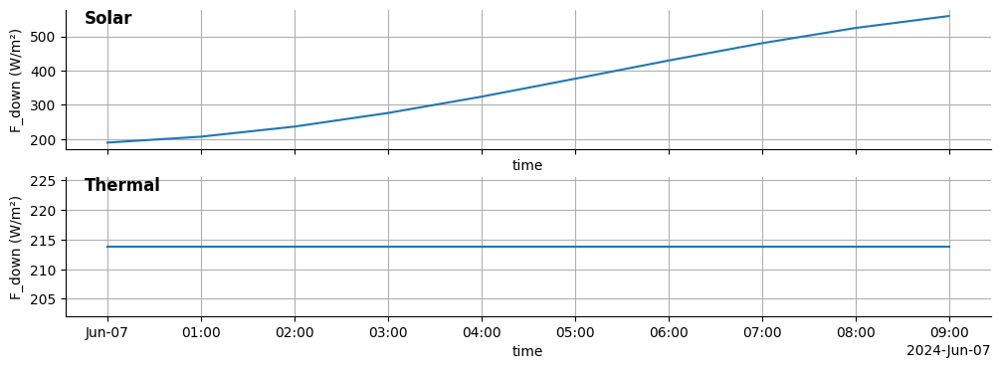

Ny-Ålesund radiation#
Simulates solar and thermal irradiance at Ny-Ålesund (Svalbard, 78.9°N) with the atmosphere taken from the closest IGRA radiosonde. Fetching the sounding needs network access.
import pyradtran
from pyradtran import load_config
import matplotlib.pyplot as plt
import numpy as np
import xarray as xr
from pathlib import Path
import pandas as pd
import logging
# Suppress verbose output from pyradtran
logging.getLogger('pyradtran').setLevel(logging.CRITICAL)
Path("work").mkdir(exist_ok=True)
# ── Solar config ─────────────────────────────────────────────────────────────
cfg_solar = load_config()
cfg_solar.simulation_defaults.rte_solver = "disort"
cfg_solar.simulation_defaults.mol_abs_param = "reptran per_nm"
cfg_solar.simulation_defaults.source = "solar"
cfg_solar.simulation_defaults.wavelength_nm = [400, 3200]
cfg_solar.simulation_defaults.integrate_wavelength = True
cfg_solar.simulation_defaults.output_columns = ["zout", "lambda", "sza", "edir", "eglo", "edn", "eup", "enet", "albedo"]
cfg_solar.execution.max_workers = 8
solar_config_path = Path("work/nya_rad_solar.yaml")
cfg_solar.to_yaml(solar_config_path)
# ── Thermal config ────────────────────────────────────────────────────────────
cfg_thermal = load_config()
cfg_thermal.simulation_defaults.rte_solver = "disort"
cfg_thermal.simulation_defaults.mol_abs_param = "reptran medium"
cfg_thermal.simulation_defaults.source = "thermal"
cfg_thermal.simulation_defaults.wavelength_nm = [2500, 100000] # include the far infrared
cfg_thermal.simulation_defaults.integrate_wavelength = True
cfg_thermal.simulation_defaults.output_columns = ["zout", "lambda", "sza", "edir", "eglo", "edn", "eup", "enet", "albedo"]
cfg_thermal.execution.max_workers = 8
thermal_config_path = Path("work/nya_rad_thermal.yaml")
cfg_thermal.to_yaml(thermal_config_path)
print(f"Solar config: {solar_config_path}")
print(f"Thermal config: {thermal_config_path}")
# ── Input dataset ─────────────────────────────────────────────────────────────
N_timesteps = 10
lat, lon = 78.925, 11.922222 # Ny-Ålesund, Svalbard
ds = xr.Dataset(
coords={
'time': pd.date_range('2024-06-07T00:00:00', periods=N_timesteps, freq='1h'),
'latitude': ('time', [lat] * N_timesteps),
'longitude': ('time', [lon] * N_timesteps),
'altitude': ('altitude', [0.0]),
},
data_vars={
'surface_temperature': ('time', [275.15] * N_timesteps), # Kelvin
}
)
ds
Solar config: work/nya_rad_solar.yaml
Thermal config: work/nya_rad_thermal.yaml
<xarray.Dataset> Size: 328B
Dimensions: (time: 10, altitude: 1)
Coordinates:
* time (time) datetime64[ns] 80B 2024-06-07 ... 2024-06-07T...
latitude (time) float64 80B 78.92 78.92 78.92 ... 78.92 78.92
longitude (time) float64 80B 11.92 11.92 11.92 ... 11.92 11.92
* altitude (altitude) float64 8B 0.0
Data variables:
surface_temperature (time) float64 80B 275.1 275.1 275.1 ... 275.1 275.1Retrieving radiosonde data#
RadiosondeAtmosphereGenerator fetches the IGRA sounding closest to the target location and time and writes it as a libRadtran radiosonde file (Atmosphere & ERA5). The file header names the station and its distance: here the Ny-Ålesund sounding launched at 11 UTC on 7 June 2024, 0.2 km from the target point. Ny-Ålesund launches at about 11 UTC rather than at the synoptic 00/12 UTC.
from datetime import datetime
from pyradtran.io import RadiosondeAtmosphereGenerator
# Build a libRadtran atmosphere file from the closest IGRA sounding
atm_path = RadiosondeAtmosphereGenerator.create_radiosonde_atmosphere_file(
time=datetime(2024, 6, 7, 0),
latitude=lat,
longitude=lon,
output_filepath="work/sonde_nya.dat",
)
print(f"Atmosphere file created at: {atm_path}")
# Print the first few lines of the generated atmosphere file to verify
print("\nFirst 10 lines of the generated atmosphere file:")
with open(atm_path, 'r') as f:
for _ in range(10):
print(f.readline().strip())
Atmosphere file created at: work/sonde_nya.dat
First 10 lines of the generated atmosphere file:
# Radiosonde atmosphere profile
# NY-ALESUND II at 2024-06-07 11:00 UTC with distance 0.19 km
# p(hPa) T(K) h2o(RH%)
6.12 250.55 0.482
6.50 249.75 0.481
6.68 249.05 0.483
6.96 247.75 0.477
7.08 246.75 0.478
7.52 242.55 0.472
7.71 241.85 0.475
Running simulations#
The radiosonde option in params passes the profile to uvspec for both the solar and the thermal run.
ds_sim_solar = ds.pyradtran.run(
config_path=solar_config_path,
return_dataset=True,
save_to_file=False,
params={"radiosonde": str(atm_path) + " H2O RH"},
show_progress=False,
)
ds_sim_thermal = ds.pyradtran.run(
config_path=thermal_config_path,
return_dataset=True,
save_to_file=False,
params={"radiosonde": str(atm_path) + " H2O RH"},
show_progress=False,
)
Results#
Clear-sky downwelling irradiance at the surface. The solar irradiance (400–3200 nm) follows the solar elevation; the thermal irradiance (2.5–100 µm, about 214 W m⁻²) is constant because every time step uses the same sounding. Solar output is in mW m⁻² and divided by 1000 for the plot (Results & Post-Processing).
fig, ax = plt.subplots(2, 1, figsize=(12, 4), sharex=True)
(ds_sim_solar.eglo / 1000).plot(ax=ax[0])
(ds_sim_thermal.eglo).plot(ax=ax[1])
texts = ['Solar', 'Thermal']
for a, t in zip(ax, texts):
a.text(0.02, 0.9, t, transform=a.transAxes, fontsize=12, fontweight='bold')
for a in ax:
a.set_ylabel('F_down (W/m²)')
a.grid()
a.spines[['top', 'right']].set_visible(False)
a.set_title('')
